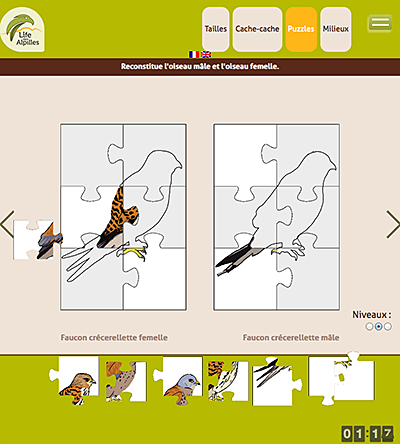
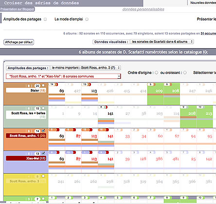

Interfacteur
gaetan.langhade.net
contact
Vers quelques réalisations
React pour une interface monopage avec timeline
Note de présentation
Dépôt sur Github
Jeu du puzzle, autres jeux

Note de présentation
Dépôt sur Github
Croiser des séries de données

Note de présentation
Dépôt sur Github
Player image par image
Note de présentation
Archive sur Github